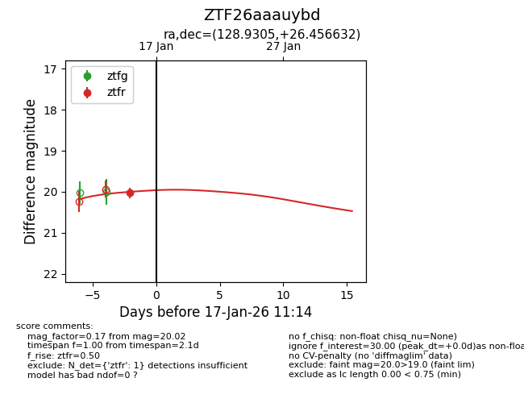
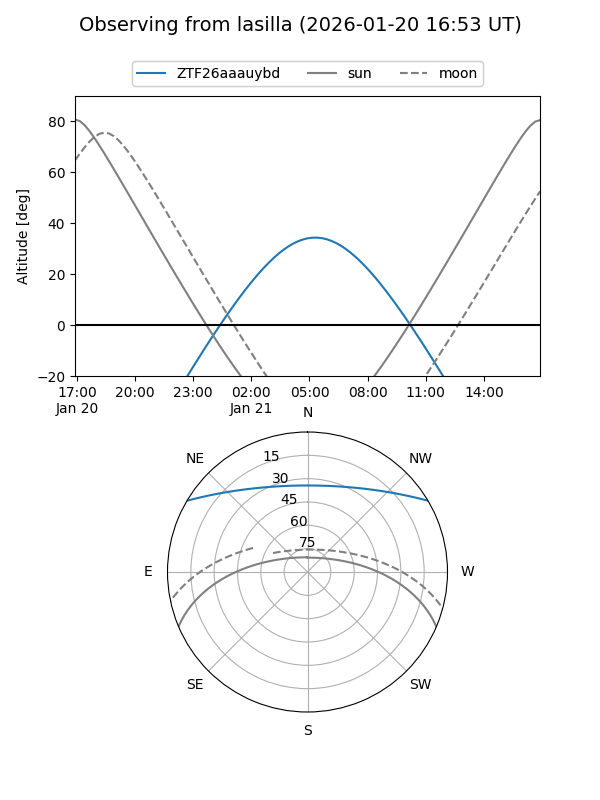
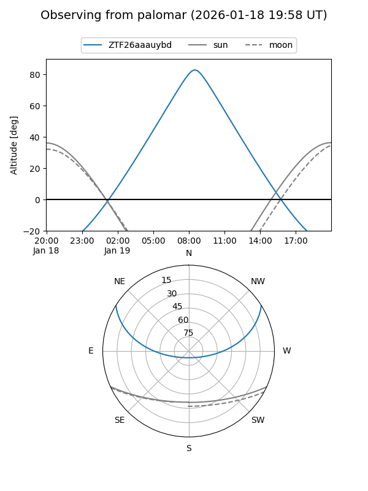

ZTF26aaauybd
Target ZTF26aaauybd at 2026-01-15 11:10
Aliases and brokers:
FINK: link
Lasair: link
ALeRCE: link
alt names
ZTF26aaauybd (ztf,fink_ztf)
Coordinates:
equatorial (ra, dec) = 128.9305,+26.45663
equatorial (HMS+DMS) = 08:35:43.32,+26:27:23.88
galactic (l, b) = (197.8244,+33.59532)
Flags:
Photometry:
last ztfr=20.02
1 ztfr detections
Lightcurve

Visibility


Additional plots